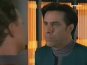
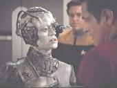

|
|
721 - Caretaker |
|
| In questo episodio... Note On location 47 Blooper YATI Riciclati Versione italiana Premi Citazioni |
| Episodi |
| The Maquis Cold Fire Shattered |
| Specie |
| Nacene Ocampa Kazon |
| Pianeti |
| Ocampa Volnar |
| Organizzazioni |
| Maquis |
| Navigazione |
|
Deep Space Nine Stazione spaziale nacene Tempesta di plasma |
| Armi |
| Tricobalto |
| Sezione medica |
| Trianolina |
| Quante volte... |
|
La Voyager sarebbe potuta tornare a casa? Un marinaio viene rapito, arrestato o processato? Un'astronave della Flotta viene abbordata o catturata? Viene interrotto un pasto? |
| SEQ | 1/2 | |
| UPN | 16.01.1995 | |
| RAI | 29.09.1997 (prima parte) 30.09.1997 (seconda parte) |
|
| VHS | 1.1 (PG) | |
| STO | Rick Berman Michael Piller Jeri Taylor |
|
| TPY | Michael Piller Jeri Taylor |
|
| REG | Winrich Kolbe | |
| MUS | Jay Chattaway | |
| GUS | Ten. Joseph Carey | Josh Clark |
| Ten. Stadi | Alicia Coppola | |
| Mark | Stan Ivar | |
| Ten. Com. Cavit | Scott Jaeck | |
| Daggin | Eric David Johnson | |
| Guardiamarina Rollins | Scott MacDonald | |
| Quark | Armin Shimerman | |
| Gul Evek | Richard Poe | |
| Jabin | Gavan O'Herlihy | |
| Toskat | David Selburg | |
| Zia Adah Reh | Angela Paton | |
| Caretaker Uomo con il banjo |
Basil Langton | |
| Dottore ocampa | Bruce French | |
| Infermiera ocampa | Jennifer S. Parsons | |
| Dottore umano | Jeff McCarthy | |
| Figlia del fattore | Keely Sims | |
| Voce del computer | Majel Barrett | |
| IT | Il guardiano Dall'altra parte dell'universo |
|
| DE | Der Fürsorger | |
| FR | Le pourvoyeur | |
| BR | O Guardião | |
| JP | Harukanaru Furusato e (To Far Home - the Earth) | |
Data Stellare 48315.6: Per sfuggire all'inseguimento dei Cardassiani, una nave Maquis si rifugia nelle Badlands e viene investita da una forma sconosciuta di energia. La Voyager viene inviata nelle Badlands alla ricerca della nave Maquis, sulla quale è infiltrato un ufficiale della Flotta Stellare, Tuvok, che da settimane non da più sue notizie. Durante la ricerca, anche la Voyager subisce la stessa sorte e viene portata a 70.000 anni luce dalle Badlands nel quadrante Delta. Ripresosi dai danni subiti, l'equipaggio viene teletrasportato su una misteriosa stazione spaziale che invia periodicamente impulsi di energia sul pianeta attorno a cui è in orbita. Dopo una serie di esperimenti medici, l'equipaggio viene lasciato libero, con l'eccezione di Harry Kim, che si sveglia in una stanza con B'Elanna Torres; i due si trovano sotto la superficie di Ocampa e sembrano aver contratto una malattia sconosciuta. Nel frattempo, Janeway e Chakotay decidono di unire le forze per risolvere il comune problema e tornano sulla stazione per parlare con l'entità aliena, il Custode, senza peraltro ottenere risultati, fuorché la rivelazione che fu la sua razza a provocare la desertificazione di Ocampa e lui, insieme ad un'altra della sua specie sporocistica, è stato incaricato di aiutare gli Ocampa a sopravvivere. Dopo essersi messi in contatto con Neelix, che si offre di guidarli, alcuni membri dell'equipaggio della Voyager decidono di scendere su Ocampa, la cui superficie è abitata da un gruppo di Kazon. La missione non sortisce alcun effetto, ma una giovane Ocampa, Kes, viene salvata dai Kazon. Kes guida gli ufficiali della Flotta sotto la superficie del pianeta, dove riescono a recuperare Kim e B'Elanna; intanto il Custode ha terminato di accumulare scorte di energia a favore degli Ocampa e si appresta a morire. Mentre Janeway tenta di convincere il Custode a riportarli a casa prima che sia troppo tardi, i Kazon e attaccano la Voyager e la nave dei Maquis per impadronirsi della stazione spaziale del Custode. Per impedire che la stazione cada nelle mani Kazon, che ne farebbero un uso improprio, Janeway la distrugge, precludendosi ogni possibilità di tornare a casa con la stessa tecnologia che ha portato la Voyager lontano dalla Federazione.
|  |
|  |
Neelix: Whatever you need is what I have to offer. You need a guide? I'm your guide. You need supplies? I know where to procure them. [T:1:24:25]
Janeway: We are alone, in an uncharted part of the galaxy. We've already made some friends here... and some enemies. We have no idea of the dangers we're going to face. But one thing is clear -both crews are going to have to work together if we're to survive. That's why Commander Chakotay and I have agreed that this should be one crew... a Starfleet crew. And as the only Starfleet vassel 'assigned' to the Delta Quadrant, we'll continue to follow our directive to seek out new worlds and explore space. But our primary goal is clear. Even at maximum speeds, it would take seventy-five years to reach the Federation... But I'm not willing to settle for that. There's another entity like the Caretaker out there somewhere who has the ability to get us there a lot faster. We'll be looking for her. And we'll be looking for wormholes, spatial rifts, or new technologies to help us. Somewhere, along this journey... we'll find a way back. Mr. Paris, set a course, for home. [T:1:25:10]